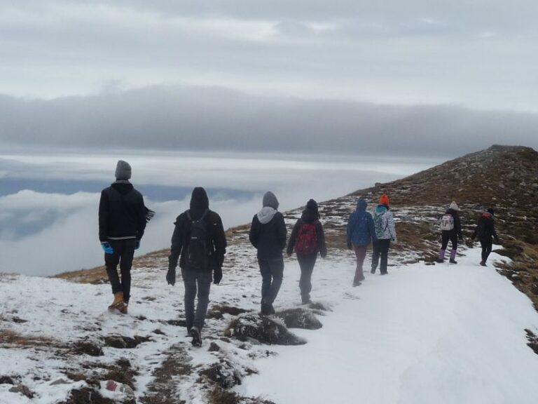

Amintiri din hike-ul de toamnă

Începem noul an cu amintirile pe care unul dintre exploratorii aspiranți ai Cabanei ni le-a împărtășit la întoarcerea din prima sa ieșire ca cercetaș. Panait are cuvântul:
În data de 28 octombrie 2016 am avut deosebita plăcere de a participa la hike-ul de toamnă împreună cu Cercetașii României de la Cabana Scout. Acesta avea să fie prima mea excursie făcută cu acești oameni minunați. „Aventura” a început în momentul în care m-am trezit, adică dimineața la ora 5. La ora 06:19 aveam trenul spre Bușteni. Vreau să precizes că a fost prima oară în viață mea când am mers cu trenul și pot spune că timpul a trecut destul de repede în condițiile în care nu am avut timp sa ne plictisim. Am jucat jocuri în care trebuia să facem pe detectivii cu scopul de a descoperi întreaga poveste, pornind de la o simplă propoziție. La oră 9 am ajuns în gară din Bușteni. În acel moment habar nu aveam ce urma să ne aștepte. Eu credem că nu o să dureze mai mult de 2 ore până la cabană, dar mă înșelasem. Astfel am pornit la drum. Și am mers noi ce am mers și am intrat pe un drum de pădure. Din acel moment am avut parte de peisaje mirobolante. După un drum de aproape 7 ore, am ajuns în sfârșit la cabana Mălăiești unde urma să inoptam. Intrăm în cameră și observăm că nu există prize și că nu există semnal la telefon (pe vodafone, mai mult noroc au avut cei care aveau digi :p ). Așadar acolo ne-am deconectat pentru 3 zile de tehnologie și am avut ocazia de a socializa.
A două zi dimineață am plecat în așa zisul hike. Drumul nu a fost tocmai ușor însă noi am reușit să îl parcurgem cu succes. Pe parcursul drumului am realizat că am fost norocos să țin pasul cu ceilalți în primul meu hike și să fiu martor la splendoarea naturii. În acea zi am descoperit bucuria de a mânca un măr pentru a mă hidrata, pentru că apa nu aveam de unde lua. Terminând și acest traseu după aproximativ 5 ore, ajungem iar la cabană unde trebuia să ne odihnim pentru că a doua zi. Urma iar să o luăm de la capăt cu drumul spre gară.
În următoarea zi ne-am împachetat bagajele și am plecat spre gară. Pe drum cineva a vrut să cedeze, dar încurajările venite din partea cercetașilor au motivat-o să continue traseul. În față noastă a stat pe tot parcursul drumului un câine extrem de inteligent, care a venit după noi de la cabană. Astfel ajungem cu bine în gară unde avem parte de un festin.
În concluzie, acest hike a fost mirobolant pentru mine, deoarece am trăit clipe minunate alături de niște oameni speciali.
de Alexandru Panait